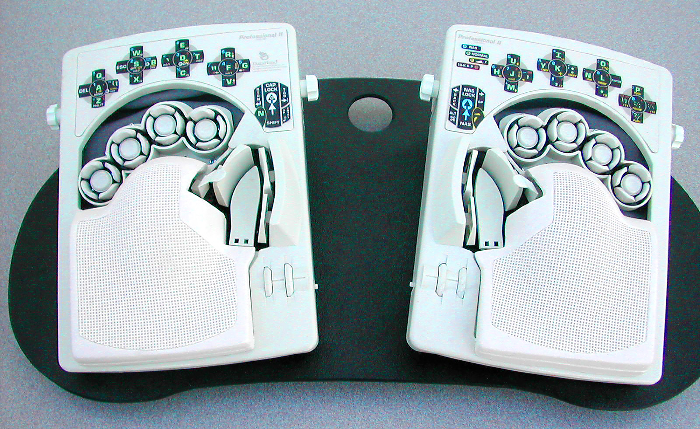
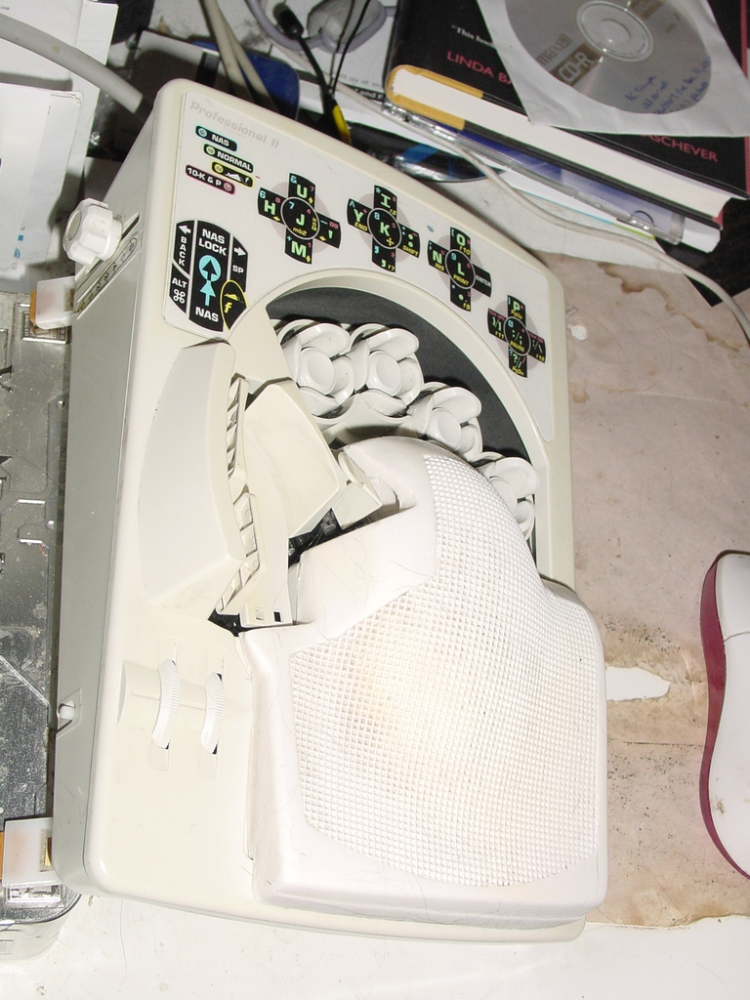

DataHand Keyboard
The keyboard where your fingers never move — each digit rests in a padded well and types by twitching in five directions.

Overview
The DataHand is an unconventional computer keyboard introduced by DataHand Systems, Inc. in 1990, designed to eliminate wrist motion and finger extension entirely. Each of the user's five fingers rests in an individual padded well containing five magnetic switches: press down (center), or nudge north, south, east, or west. The layout maps approximately to QWERTY — pressing 'up' with the left four fingers types QWER, while pressing 'down' (center press) types ASDF. Thumb clusters handle mode switching between letters, numbers/symbols, and function/mouse modes. The keys use magnets for return action (not springs) and optical sensors for activation, requiring only about 1mm of movement and minimal force. The two hand units split apart and can be positioned independently. The system was developed through the late 1980s by Dale Retter at Industrial Innovations (Scottsdale, Arizona), presented at the 1989 Human Factors Society annual meeting, and brought to commercial production in 1990. DataHand Systems marketed the keyboard primarily to computer users suffering from repetitive strain injury and carpal tunnel syndrome.
Deep dive
Dale J. Retter invented the DataHand to address his own repetitive strain injury. The concept was developed through Industrial Innovations of Scottsdale, Arizona, with early prototypes dating to 1989. The first public presentation was at the Human Factors Society 33rd Annual Meeting in 1989, where Leland Knight presented a paper on the 'Design, Potential, Performance, and Improvements in the Computer Keyboard and Mouse.' A follow-up evaluation by William Ferrill appeared in Advances in Industrial Ergonomics and Safety in 1992, providing independent assessment. DataHand Systems, Inc. was formally founded in 1985 and began manufacturing in 1990. The original model, later designated the DH200, used magnetically-held keys with optical sensors — a deliberately low-force mechanism designed to minimize finger fatigue.
Each finger-well has five magnetic switches (center + N/S/E/W) actuated by sub-millimeter finger movements. This requires no wrist movement and almost no finger extension — the hands remain completely stationary on palm rests. The keyboard is split into left and right units that can be positioned and angled independently. The layout approximates QWERTY: the home row is accessed by center-presses, the row above by upward nudges, and the row below by downward nudges. Sideways nudges access columns normally reached by lateral finger movement (e.g., G and H). Three thumb-activated mode keys switch between: Normal mode (letters), Numbers/Symbols mode, and Function/Mouse mode (which lets the same finger movements control a cursor). The Pro II model added macro recording. Learning the DataHand takes approximately one month of dedicated practice to reach normal typing speed. An industrial evaluation by Ferrill (1992) found the design promising for reducing cumulative trauma disorders.
The keyboard uses magnetic key return — each key is held in its neutral position by small magnets, and optical sensors (opto-interrupters) detect when a key has been moved from neutral. This eliminates conventional springs and allows very low activation force. Each finger-well cluster is individually adjustable for finger length and palm size. The two hand units connect via a 15-pin serial-style cable. The DH200 model (1990-1995) had a distinctive sculpted beige shell. Later models included the Personal (non-programmable) and Professional II (with macro recording). The keyboard does not function in direct sunlight (optical sensors are ambient-light-sensitive) and requires periodic cleaning to prevent dust from blocking the sensors. DataHand also sold a 'DataChair' — an office chair with DataHand keyboard halves mounted on the armrests — for $1,600.
The DataHand achieved cult status among ergonomic keyboard enthusiasts and RSI sufferers. It appeared in films including Contact (1997, as spaceship controls) and Stormbreaker (2006), and on TV's Mighty Morphin Power Rangers. DataHand Systems ceased manufacturing in 2008 due to supplier issues, but the design has inspired multiple open-source recreations: the DodoHand (2013, 3D-printed), the lalboard (2019, 3D-printable with hand-solderable PCBs), and the Svalboard (2023, small-run production including trackpoint and trackball options). The DataHand remains a touchstone in ergonomic keyboard design — proof that the QWERTY keyboard can be rethought at the level of individual finger biomechanics.
Team & pioneers
- Dale J. Retter. Inventor of the DataHand concept, developed to address his own RSI
- Industrial Innovations (Scottsdale, AZ). Company that developed the early DataHand prototypes (1989-1991)
- DataHand Systems, Inc.. Company founded 1985 to manufacture and market the DataHand keyboard
- Leland Knight. Presented the DataHand design paper at the 1989 Human Factors Society meeting
- William Ferrill. Author of independent ergonomic evaluation of DataHand (1992)
Media

Sources
- Wikipedia: DataHand
- Octopup.org: Detailed DataHand owner review with historical photos of 1989-1991 prototypes by Dale Retter and Industrial Innovations
- Knight & Retter, 'DataHand: Design, Potential, Performance, and Improvements in the Computer Keyboard and Mouse', Human Factors Society 33rd Annual Meeting, 1989
- Ferrill, 'Preliminary Test and Evaluation of DataHand', Advances in Industrial Ergonomics and Safety IV, 1992
- Industrial Innovations DataHand Informational Prospectus, 1990
- Microsoft Buxton Collection: DataHand entry
- Hackaday: 'Inputs Of Interest: The Differently Dexterous DataHand' (2020)